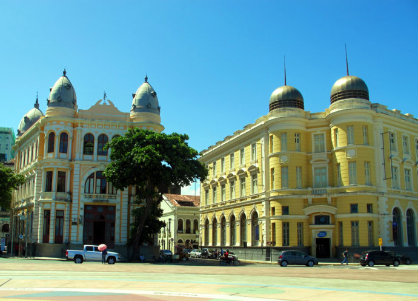
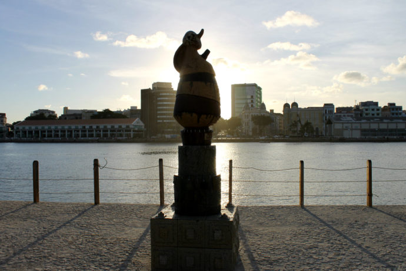
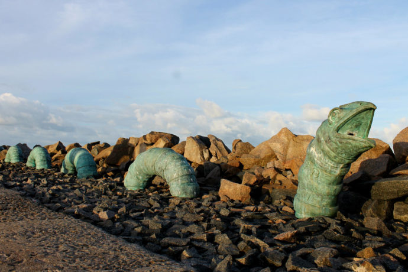

O que fazer no Recife Antigo em um dia
Pra começar com o pé direito, siga direto pra o Marco Zero. O nome é oficial da praça é Barão do Rio Branco, mas dificilmente você vai achar alguém que saiba/lembre disso. Além de ser o ponto de partida pra marcação das distâncias rodoviárias locais, essa praça é o palco principal pra manifestações culturais como o nosso Carnaval maravilhoso. <3
E além do símbolo de “Recife” que foi colocado no local há alguns anos e já rendeu muitas selfies desde então, outro destaque do espaço é o chão, tomado por uma obra do pintor Cícero Dias inspirada no seu quadro “Eu vi o mundo… e ele começava no Recife” (que gerou, na época em que foi mostrado ao mundo, polêmicas parecidas com as que têm rolado hoje por aí), com uma rosa dos ventos no meio.
A praça é banhada pelo estuário do Rio Capibaribe, importantíssimo pra história da cidade. Do outro lado do estuário fica um dique que abriga o Parque das Esculturas de Francisco Brennand, artista local renomadíssimo, com destaque pra polêmica obra de cerâmica que, devido ao formato fálico, é chamada por muitos de “pica de Brennand”. :P
